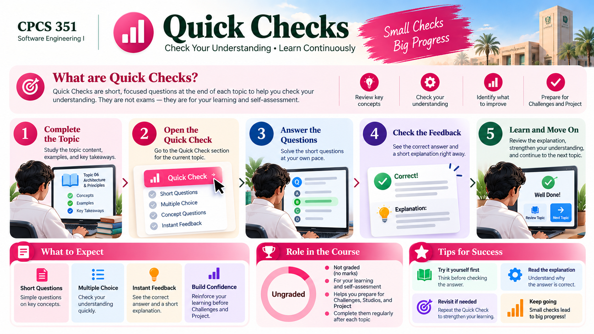

QUICK CHECKS · CPCS 351
Know what to review and where to go.
Five graded checks in Blackboard. These pages separate preparation from the actual assessed attempt.

How Quick Checks works
Five graded checks worth 2 marks each. This site supports preparation; the assessed attempt is in Blackboard.
STEP 01Check covered units
STEP 02Review key ideas
STEP 03Try practice
STEP 04Complete in Blackboard
Quick Check preparation
QUICK CHECK 1 · WEEK 1
Software Engineering Foundations
Review the related concepts, practise independently and follow the released Blackboard instructions.
2 marks · Blackboard · preparation
QUICK CHECK 2 · WEEK 3Requirements Foundations
Review the related concepts, practise independently and follow the released Blackboard instructions.
2 marks · Blackboard · preparation
QUICK CHECK 3 · WEEK 7Design & Architecture
Review the related concepts, practise independently and follow the released Blackboard instructions.
2 marks · Blackboard · preparation
QUICK CHECK 4 · WEEK 10Collaborative Construction
Review the related concepts, practise independently and follow the released Blackboard instructions.
2 marks · Blackboard · preparation
QUICK CHECK 5 · WEEK 12Testing & Quality
Review the related concepts, practise independently and follow the released Blackboard instructions.
2 marks · Blackboard · preparation